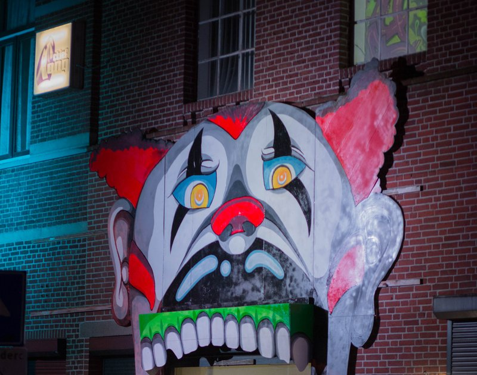

Laurens & Laurens
Expositie door vader en zoon
- Dag
- vrijdag
- Begin
- 14:00
- Einde
- 18:00
- Soort
- Expo
- Locatie
- Jong Actief
Laurens & Laurens
Een duo-expositie van vader en zoon, Laurens Bosman junior en Laurens Bosman senior. Zo kun je de werken van twee generaties kunstenaars in één expositie aanschouwen, of kopen, mag ook natuurlijk ;-)
Laurens JR is begonnen als tekenaar en richt zich sinds 2012 ook op het werken met acryl- of olieverf in diverse stijlen. Hij is onder andere geïnspireerd door het ‘pad des levens’. De eindeloze zoektocht naar de perfecte staat van zijn. Zijn vader, Laurens SR, is een schilder die zich onder andere bezig houdt met landsschapskunst en figuratieve werken. Hij wil mensen bewegen door de ware aard van de mens weer te geven’.
 Jong Actief
Jong Actief

In het vervallen pand van jongerenorganisatie Stichting Jong Actief waan je je voor even in het underground clubleven van Berlijn. Daar kom je de meest extravagante activiteiten en figuren tegen, of je belandt per ongeluk in een ruimte, waarvan niemand wist dat die bestond...
Stichting Jong Actief is voor en door jongeren opgericht en richt zich op de ontwikkeling van vaardigheden en talenten van jongeren. Het leerproces om zelfredzaam te worden in de samenleving wordt voor een groot deel ondersteund door leeftijdgenoten.